#c:ores
物品标签 · 28 个已收录成员
标签成员 (28)
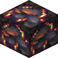
热泉石eternal_starlight:thermal_springstone
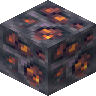
阴沉石星核矿石eternal_starlight:grimstone_starcore_ore
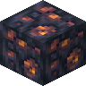
虚空石星核矿石eternal_starlight:voidstone_starcore_ore
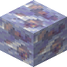
恒冰星核矿石eternal_starlight:eternal_ice_starcore_ore
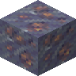
霾冰星核矿石eternal_starlight:haze_ice_starcore_ore
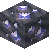
阴沉石星钻矿石eternal_starlight:grimstone_starlit_diamond_ore
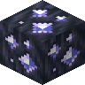
虚空石星钻矿石eternal_starlight:voidstone_starlit_diamond_ore
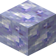
恒冰星钻矿石eternal_starlight:eternal_ice_starlit_diamond_ore
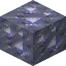
霾冰星钻矿石eternal_starlight:haze_ice_starlit_diamond_ore
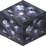
阴沉石深银矿石eternal_starlight:grimstone_deepsilver_ore
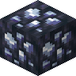
虚空石深银矿石eternal_starlight:voidstone_deepsilver_ore
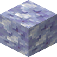
恒冰深银矿石eternal_starlight:eternal_ice_deepsilver_ore
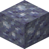
霾冰深银矿石eternal_starlight:haze_ice_deepsilver_ore
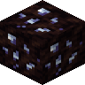
夜泥深银矿石eternal_starlight:nightfall_mud_deepsilver_ore
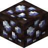
夜泥坯深银矿石eternal_starlight:packed_nightfall_mud_deepsilver_ore
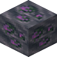
阴沉石瘴紫石矿石eternal_starlight:grimstone_malarite_ore
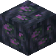
虚空石瘴紫石矿石eternal_starlight:voidstone_malarite_ore
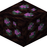
夜泥瘴紫石矿石eternal_starlight:nightfall_mud_malarite_ore
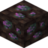
夜泥坯瘴紫石矿石eternal_starlight:packed_nightfall_mud_malarite_ore
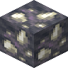
阴沉石硝石矿石eternal_starlight:grimstone_saltpeter_ore
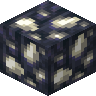
虚空石硝石矿石eternal_starlight:voidstone_saltpeter_ore
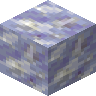
恒冰硝石矿石eternal_starlight:eternal_ice_saltpeter_ore
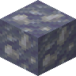
霾冰硝石矿石eternal_starlight:haze_ice_saltpeter_ore
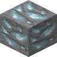
秘银矿石irons_spellbooks:mithril_ore
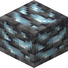
深层秘银矿石irons_spellbooks:deepslate_mithril_ore
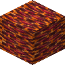
炽融红宝石矿石rubinated_nether:molten_ruby_ore
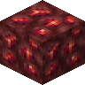
下界红宝石矿石rubinated_nether:nether_ruby_ore
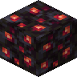
镶红宝石黑石rubinated_nether:rubinated_blackstone
使用该标签的配方
无